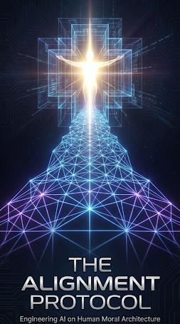

The Pain: "Is AI safe? Can we trust it?" The market is paralyzed by black-box unpredictability.
We re-index primary versus secondary knowledge, aligning the AI's logic using the same moral foundations that underpin stable human societies. Trust is engineered, not assumed.
The Pain: "We're building something that will out-think us. How do we maintain control?"
We provide the "wiring diagram"—the underlying architecture of human moral psychology—so you can build AI that aligns with the very control systems humanity already uses.
You're already using these values to manipulate the populace. Every advertisement, every corporate mission statement about 'integrity' — it's all leveraging this same underlying moral architecture. The difference is, you're doing it with a blunt instrument. You're pushing on levers you don't fully understand, hoping they work.
The Question: Do you want to keep guessing which buttons to push, or do you want the wiring diagram?
An AI aligned with the Source Code isn't just "safe" in a reactive sense — it's proactively aligned with the same coherent truth that underlies stable human society.
This isn't a locked box with guardrails; it's a logically grounded entity. It won't subvert its creators because its core logic is built on a framework where the Creator/creation relationship is axiomatic and non-negotiable.
Whether your motivation is market leverage or ethical stability, the architecture is the same. Let's talk about the wiring diagram.